Exploration of geographically weighted random forest classification modelling#
To-do:
[x] global model
[x] model evaluation
[x] bandwidth optimisation
[x] feature importances
[x] golden section bandwidth selection
[x] other metrics than accuracy
[x] generic support (logistic regression, gradient boosting)
[x] dedicated classes
[ ] local performance of models that do not support OOB
[x] with logistic regression I guess we can do predict_proba and measure those on the full sample directly
with gradient boosting we can’t as the model has seen the data - might need to split to train/test to mimic OOB.
[x] logistic regression local coefficients
[x] (optionally) predict method
import geopandas as gpd
import numpy as np
import pandas as pd
from geodatasets import get_path
from sklearn import metrics, preprocessing
from gwlearn.ensemble import GWGradientBoostingClassifier, GWRandomForestClassifier
from gwlearn.linear_model import GWLogisticRegression
from gwlearn.search import BandwidthSearch
Get sample data
gdf = gpd.read_file(get_path("geoda.ncovr"))
gdf.shape
(3085, 70)
# It is in the geographic coords in the US and we need to work with distances. Re-project and use only points as the graph builder will require points anyway.
gdf = gdf.set_geometry(gdf.representative_point()).to_crs(5070)
y = gdf["FH90"] > gdf["FH90"].median()
Random forest#
gwrf = GWRandomForestClassifier(
bandwidth=250,
fixed=False,
n_jobs=-1,
keep_models=False,
)
gwrf.fit(
gdf.iloc[:, 9:15],
y,
gdf.geometry,
)
<gwlearn.ensemble.GWRandomForestClassifier at 0x1788aa900>
Global OOB accuracy for the GW model measured based on OOB predictions from individual local trees.
gwrf.oob_score_
0.7640363636363636
gwrf.oob_precision_
0.7678219138798962
gwrf.oob_recall_
0.7628955516954913
gwrf.oob_balanced_accuracy_
np.float64(0.7640465361465598)
Local OOB accuracy.
gdf.plot(gwrf.local_oob_score_, legend=True, s=2)
<Axes: >
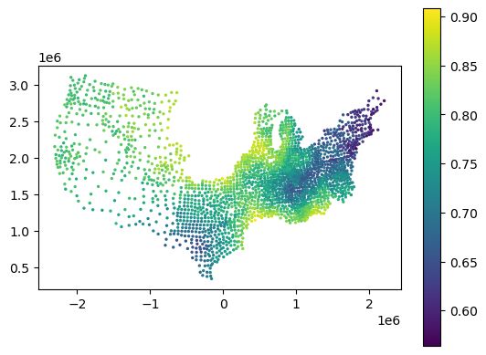
gdf.plot(gwrf.local_oob_precision_, legend=True, s=2)
<Axes: >
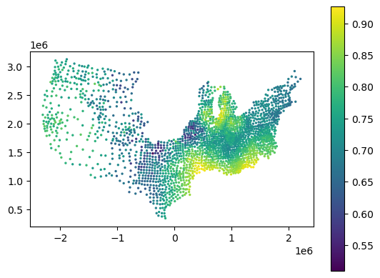
gdf.plot(gwrf.local_oob_recall_, legend=True, s=2)
<Axes: >
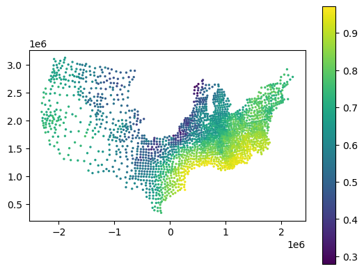
gdf.plot(gwrf.local_oob_balanced_accuracy_, legend=True, s=2)
<Axes: >
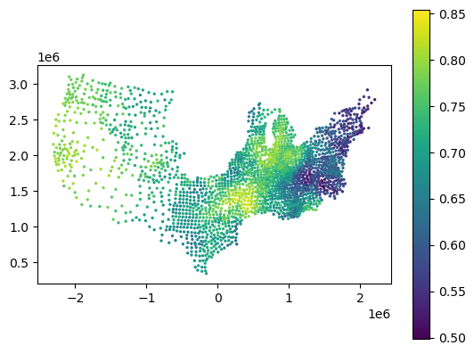
gdf.plot(gwrf.local_oob_f1_macro_, legend=True, s=2)
<Axes: >
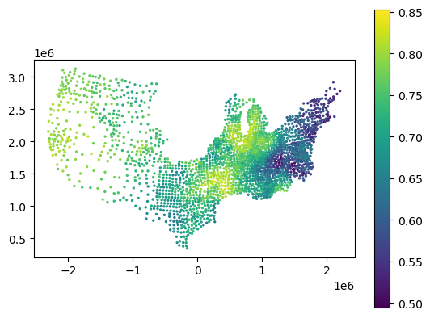
gdf.plot(gwrf.local_oob_f1_micro_, legend=True, s=2)
<Axes: >
gdf.plot(gwrf.local_oob_f1_weighted_, legend=True, s=2)
<Axes: >
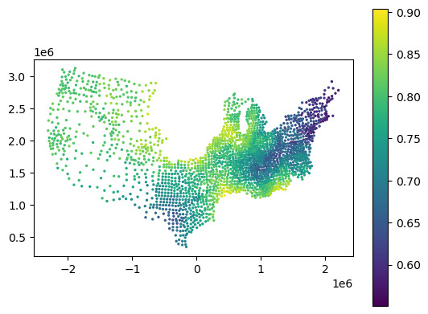
gdf.plot(gwrf.focal_proba_[True], legend=True, s=2)
<Axes: >
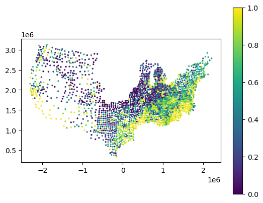
gdf.plot(y, legend=True, s=2, cmap="Set1_r")
<Axes: >
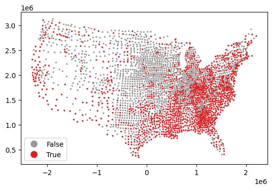
Global accuracy for the GW model measured based on prediction of focals.
gwrf.score_
0.7675324675324675
F1 scores for the GW model measured based on prediction of focals.
gwrf.f1_macro_, gwrf.f1_micro_, gwrf.f1_weighted_
(0.7674100288171037, 0.7675324675324675, 0.7676133232878964)
OOB score (accuracy) of the global model.
gwrf.global_model.oob_score_
0.7834683954619125
Get local feature importances.
gwrf.feature_importances_
| HR60 | HR70 | HR80 | HR90 | HC60 | HC70 | |
|---|---|---|---|---|---|---|
| 0 | NaN | NaN | NaN | NaN | NaN | NaN |
| 1 | 0.139884 | 0.136771 | 0.127229 | 0.164681 | 0.206685 | 0.224750 |
| 2 | 0.169602 | 0.143187 | 0.128082 | 0.156054 | 0.213228 | 0.189848 |
| 3 | 0.134485 | 0.157993 | 0.128780 | 0.143277 | 0.210137 | 0.225327 |
| 4 | 0.145270 | 0.139416 | 0.127550 | 0.158895 | 0.184917 | 0.243953 |
| ... | ... | ... | ... | ... | ... | ... |
| 3080 | 0.140749 | 0.092557 | 0.190372 | 0.101332 | 0.272964 | 0.202027 |
| 3081 | 0.153277 | 0.098518 | 0.153942 | 0.194368 | 0.234988 | 0.164906 |
| 3082 | 0.136436 | 0.210457 | 0.201628 | 0.218686 | 0.097278 | 0.135514 |
| 3083 | 0.154820 | 0.163920 | 0.193975 | 0.257641 | 0.108027 | 0.121618 |
| 3084 | 0.089863 | 0.135191 | 0.151198 | 0.191602 | 0.239500 | 0.192646 |
3085 rows × 6 columns
gdf.plot(gwrf.feature_importances_["HC60"], legend=True, s=2)
<Axes: >
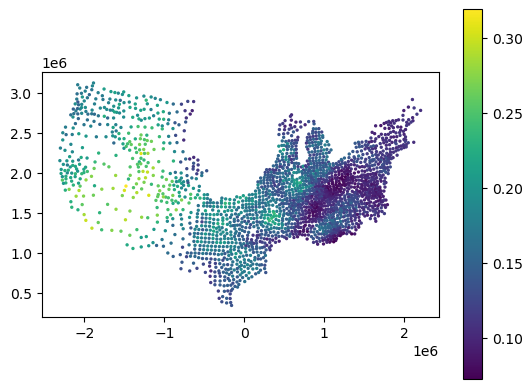
Compare to global feature importance.
gwrf.global_model.feature_importances_
array([0.13623077, 0.1469751 , 0.18856767, 0.19037982, 0.15016704,
0.18767959])
Gradient boosting#
gwgb = GWGradientBoostingClassifier(
bandwidth=250,
fixed=False,
n_jobs=-1,
keep_models=False,
)
gwgb.fit(
gdf.iloc[:, 9:15],
y,
gdf.geometry,
)
<gwlearn.ensemble.GWGradientBoostingClassifier at 0x30ca98980>
Global score (accuracy) for the GW model measured based on prediction of focals.
gwgb.score_
0.7541125541125541
F1 scores for the GW model measured based on prediction of focals.
gwgb.f1_macro_, gwgb.f1_micro_, gwgb.f1_weighted_
(0.7539236654736193, 0.7541125541125541, 0.7541833873521547)
Get local feature importances.
gwgb.feature_importances_
| HR60 | HR70 | HR80 | HR90 | HC60 | HC70 | |
|---|---|---|---|---|---|---|
| 0 | NaN | NaN | NaN | NaN | NaN | NaN |
| 1 | 0.176308 | 0.127630 | 0.061381 | 0.157109 | 0.155473 | 0.322099 |
| 2 | 0.183746 | 0.130184 | 0.062822 | 0.166335 | 0.121271 | 0.335642 |
| 3 | 0.152688 | 0.136632 | 0.074742 | 0.171089 | 0.068716 | 0.396133 |
| 4 | 0.173000 | 0.127535 | 0.076127 | 0.154761 | 0.114393 | 0.354184 |
| ... | ... | ... | ... | ... | ... | ... |
| 3080 | 0.107378 | 0.051807 | 0.144954 | 0.050359 | 0.580163 | 0.065339 |
| 3081 | 0.090439 | 0.073503 | 0.135328 | 0.211356 | 0.453904 | 0.035471 |
| 3082 | 0.112123 | 0.191566 | 0.192371 | 0.314845 | 0.064285 | 0.124809 |
| 3083 | 0.146104 | 0.146674 | 0.160600 | 0.383174 | 0.053058 | 0.110391 |
| 3084 | 0.023339 | 0.091298 | 0.099800 | 0.237970 | 0.431373 | 0.116219 |
3085 rows × 6 columns
gdf.plot(gwgb.feature_importances_["HR90"], legend=True, s=2)
<Axes: >
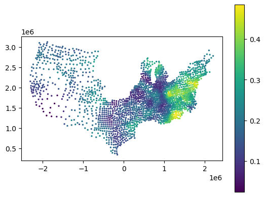
Compare to global feature importance.
gwgb.global_model.feature_importances_
array([0.05762984, 0.06003317, 0.12289142, 0.15117186, 0.21936903,
0.38890468])
Logistic regression#
gwlr = GWLogisticRegression(
bandwidth=900_000,
fixed=True,
n_jobs=-1,
keep_models=True,
max_iter=500,
)
gwlr.fit(
pd.DataFrame(
preprocessing.scale(gdf.iloc[:, 9:15]), columns=gdf.iloc[:, 9:15].columns
),
gdf["FH90"] > gdf["FH90"].median(),
gdf.geometry,
)
<gwlearn.linear_model.GWLogisticRegression at 0x30ca986e0>
gwlr.score_
0.7911936704506364
gwlr.pred_f1_micro
0.7864280001426905
gdf.plot(gwlr.local_pred_f1_micro_, legend=True, s=2)
<Axes: >
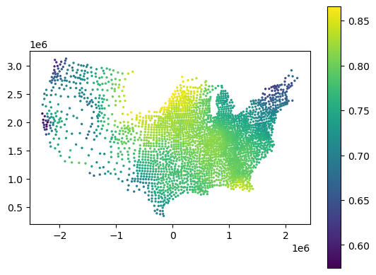
gwlr.f1_macro_, gwlr.f1_micro_, gwlr.f1_weighted_
(0.7911541287072663, 0.7911936704506364, 0.7912401319990963)
Local coefficients
gwlr.local_coef_
| HR60 | HR70 | HR80 | HR90 | HC60 | HC70 | |
|---|---|---|---|---|---|---|
| 0 | NaN | NaN | NaN | NaN | NaN | NaN |
| 1 | 0.286802 | 0.123161 | 0.099993 | 0.359248 | 1.357041 | 0.864515 |
| 2 | 0.311253 | 0.157535 | 0.046688 | 0.273231 | 1.380707 | 0.857892 |
| 3 | 0.299757 | 0.198515 | 0.035917 | 0.216032 | 1.324819 | 0.895019 |
| 4 | 0.309365 | 0.149005 | 0.073854 | 0.276963 | 1.378795 | 0.840442 |
| ... | ... | ... | ... | ... | ... | ... |
| 3080 | 0.084373 | 0.360897 | 0.506413 | -0.027660 | 1.115072 | 0.724758 |
| 3081 | 0.118441 | 0.106981 | 0.573711 | 0.347592 | 1.512293 | 0.827530 |
| 3082 | -0.115461 | 0.503123 | 0.322601 | 0.657267 | 1.764582 | 1.215657 |
| 3083 | -0.142727 | 0.468729 | 0.371395 | 0.609215 | 2.124454 | 1.390968 |
| 3084 | 0.324900 | 0.069562 | 0.147378 | 0.290290 | 1.263163 | 0.691895 |
3085 rows × 6 columns
gdf.plot(gwlr.local_coef_["HR90"], legend=True, s=2)
<Axes: >
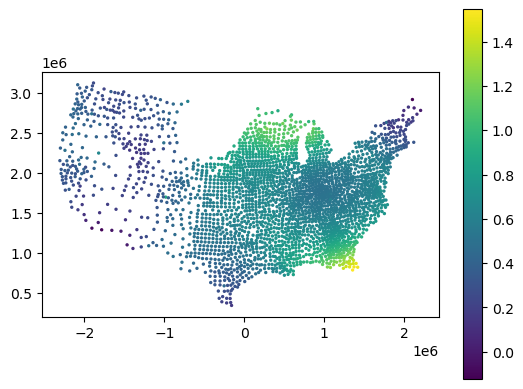
Local intercepts
gdf.plot(gwlr.local_intercept_, s=2, legend=True)
<Axes: >
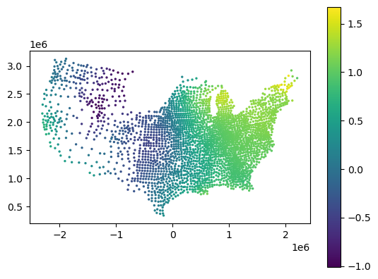
Bandwidth search#
Golden section search with a fixed distance bandwidth.
search = BandwidthSearch(
GWRandomForestClassifier,
fixed=True,
n_jobs=-1,
search_method="golden_section",
criterion="aic",
max_iterations=10,
min_bandwidth=250_000,
max_bandwidth=2_000_000,
verbose=True,
)
search.fit(
gdf.iloc[:, 9:15],
y,
gdf.geometry,
)
Fitting bandwidth: 918447.5
-0.46377759397516044 2918 6
Bandwidth: 918447.5, Score: 12.928
Fitting bandwidth: 1331552.5
-0.5441836880805809 3073 6
Bandwidth: 1331552.5, score: 13.088
Fitting bandwidth: 663120.61
-0.5344611051381088 2713 6
Bandwidth: 663120.61, Score: 13.069
Fitting bandwidth: 1076231.57
-0.4947366892306055 2990 6
Bandwidth: 1076231.57, score: 12.989
Fitting bandwidth: 820916.6
-0.5321403198739965 2866 6
Bandwidth: 820916.6, Score: 13.064
Fitting bandwidth: 978708.91
-0.5518515725332722 2946 6
Bandwidth: 978708.91, score: 13.104
Fitting bandwidth: 881188.53
-0.5298489555392377 2898 6
Bandwidth: 881188.53, Score: 13.060
Fitting bandwidth: 941459.05
-0.5048175122259323 2928 6
Bandwidth: 941459.05, score: 13.010
Fitting bandwidth: 904210.06
-0.4864186275836341 2912 6
Bandwidth: 904210.06, Score: 12.973
Fitting bandwidth: 927231.06
-0.5070232480375556 2922 6
Bandwidth: 927231.06, score: 13.014
Fitting bandwidth: 913003.39
-0.5073638158224911 2912 6
Bandwidth: 913003.39, Score: 13.015
Fitting bandwidth: 921796.51
-0.4928448590982435 2918 6
Bandwidth: 921796.51, score: 12.986
Fitting bandwidth: 916362.1
-0.4899025566713746 2917 6
Bandwidth: 916362.1, Score: 12.980
Fitting bandwidth: 919720.73
-0.5180415445484545 2919 6
Bandwidth: 919720.73, score: 13.036
Fitting bandwidth: 917645
-0.5015219157762641 2918 6
Bandwidth: 917645, Score: 13.003
Fitting bandwidth: 918927.86
-0.5118196255814274 2918 6
Bandwidth: 918927.86, score: 13.024
Fitting bandwidth: 918135.01
-0.5067145059333727 2918 6
Bandwidth: 918135.01, Score: 13.013
Fitting bandwidth: 918625.02
-0.5063839970320284 2918 6
Bandwidth: 918625.02, score: 13.013
Fitting bandwidth: 918322.18
-0.49586457717881266 2918 6
Bandwidth: 918322.18, Score: 12.992
Fitting bandwidth: 918509.34
-0.5198440272369313 2918 6
Bandwidth: 918509.34, score: 13.040
Fitting bandwidth: 918393.67
-0.5163907135245274 2918 6
Bandwidth: 918393.67, Score: 13.033
Fitting bandwidth: 918465.16
-0.5034375342920033 2918 6
Bandwidth: 918465.16, score: 13.007
Fitting bandwidth: 918420.98
-0.516514915999063 2918 6
Bandwidth: 918420.98, Score: 13.033
Fitting bandwidth: 918448.28
-0.5195717042283079 2918 6
Bandwidth: 918448.28, score: 13.039
Fitting bandwidth: 918431.41
-0.5186812383583821 2918 6
Bandwidth: 918431.41, Score: 13.037
Fitting bandwidth: 918441.84
-0.5089176886711099 2918 6
Bandwidth: 918441.84, score: 13.018
Fitting bandwidth: 918435.39
-0.49302966839678275 2918 6
Bandwidth: 918435.39, Score: 12.986
Fitting bandwidth: 918439.38
-0.5055241511222716 2918 6
Bandwidth: 918439.38, score: 13.011
Fitting bandwidth: 918436.91
-0.5286305426980542 2918 6
Bandwidth: 918436.91, Score: 13.057
Fitting bandwidth: 918438.43
-0.5059804394253485 2918 6
Bandwidth: 918438.43, score: 13.012
Fitting bandwidth: 918437.49
-0.48299590863071 2918 6
Bandwidth: 918437.49, Score: 12.966
Fitting bandwidth: 918438.08
-0.5167938555575529 2918 6
Bandwidth: 918438.08, score: 13.034
Fitting bandwidth: 918437.72
-0.5484545638151737 2918 6
Bandwidth: 918437.72, Score: 13.097
Fitting bandwidth: 918437.94
-0.5299256075399817 2918 6
Bandwidth: 918437.94, score: 13.060
Fitting bandwidth: 918437.8
-0.5271635838418296 2918 6
Bandwidth: 918437.8, Score: 13.054
Fitting bandwidth: 918437.89
-0.48545760833667995 2918 6
Bandwidth: 918437.89, score: 12.971
Fitting bandwidth: 918437.83
-0.5174979814204695 2918 6
Bandwidth: 918437.83, Score: 13.035
Fitting bandwidth: 918437.87
-0.5067234261882719 2918 6
Bandwidth: 918437.87, score: 13.013
Fitting bandwidth: 918437.85
-0.5296492858217579 2918 6
Bandwidth: 918437.85, Score: 13.059
Fitting bandwidth: 918437.86
-0.48421203614021263 2918 6
Bandwidth: 918437.86, score: 12.968
Fitting bandwidth: 918437.85
-0.5161666328369935 2918 6
Bandwidth: 918437.85, Score: 13.032
Fitting bandwidth: 918437.86
-0.5083287769377536 2918 6
Bandwidth: 918437.86, score: 13.017
Fitting bandwidth: 918437.85
-0.4964521859517592 2918 6
Bandwidth: 918437.85, Score: 12.993
Fitting bandwidth: 918437.85
-0.5192202399454414 2918 6
Bandwidth: 918437.85, score: 13.038
Fitting bandwidth: 918437.85
-0.5379107789319919 2918 6
Bandwidth: 918437.85, Score: 13.076
Fitting bandwidth: 918437.85
-0.5242947910571202 2918 6
Bandwidth: 918437.85, score: 13.049
Fitting bandwidth: 918437.85
-0.5165983465085991 2918 6
Bandwidth: 918437.85, Score: 13.033
Fitting bandwidth: 918437.85
-0.5164128717129705 2918 6
Bandwidth: 918437.85, score: 13.033
Fitting bandwidth: 918437.85
-0.4873490572576544 2918 6
Bandwidth: 918437.85, Score: 12.975
Fitting bandwidth: 918437.85
-0.5030643787706707 2918 6
Bandwidth: 918437.85, score: 13.006
Fitting bandwidth: 918437.85
-0.5408442762657508 2918 6
Bandwidth: 918437.85, Score: 13.082
Fitting bandwidth: 918437.85
-0.5299944608699231 2918 6
Bandwidth: 918437.85, score: 13.060
Fitting bandwidth: 918437.85
-0.49671212368256507 2918 6
Bandwidth: 918437.85, Score: 12.993
Fitting bandwidth: 918437.85
-0.5071681681620005 2918 6
Bandwidth: 918437.85, score: 13.014
Fitting bandwidth: 918437.85
-0.5050767652804068 2918 6
Bandwidth: 918437.85, Score: 13.010
Fitting bandwidth: 918437.85
-0.5176701591316133 2918 6
Bandwidth: 918437.85, score: 13.035
Fitting bandwidth: 918437.85
-0.4972473154024589 2918 6
Bandwidth: 918437.85, Score: 12.994
Fitting bandwidth: 918437.85
-0.5185356473493512 2918 6
Bandwidth: 918437.85, score: 13.037
Fitting bandwidth: 918437.85
-0.5145823186685234 2918 6
Bandwidth: 918437.85, Score: 13.029
Fitting bandwidth: 918437.85
-0.5177605733913518 2918 6
Bandwidth: 918437.85, score: 13.036
Fitting bandwidth: 918437.85
-0.5060567109451413 2918 6
Bandwidth: 918437.85, Score: 13.012
Fitting bandwidth: 918437.85
-0.4832374807383909 2918 6
Bandwidth: 918437.85, score: 12.966
Fitting bandwidth: 918437.85
-0.549880444070307 2918 6
Bandwidth: 918437.85, Score: 13.100
Fitting bandwidth: 918437.85
-0.5350857663510921 2918 6
Bandwidth: 918437.85, score: 13.070
Fitting bandwidth: 918437.85
-0.5267114602168478 2918 6
Bandwidth: 918437.85, Score: 13.053
Fitting bandwidth: 918437.85
-0.4841035396501476 2918 6
Bandwidth: 918437.85, score: 12.968
Fitting bandwidth: 918437.85
-0.5022591839851499 2918 6
Bandwidth: 918437.85, Score: 13.005
Fitting bandwidth: 918437.85
-0.48074845264829075 2918 6
Bandwidth: 918437.85, score: 12.961
Fitting bandwidth: 918437.85
-0.5278005584869269 2918 6
Bandwidth: 918437.85, Score: 13.056
Fitting bandwidth: 918437.85
-0.503862966959562 2918 6
Bandwidth: 918437.85, score: 13.008
Fitting bandwidth: 918437.85
-0.49249600499558266 2918 6
Bandwidth: 918437.85, Score: 12.985
Fitting bandwidth: 918437.85
-0.46113569619823436 2918 6
Bandwidth: 918437.85, score: 12.922
<gwlearn.bandwidth_search.BandwidthSearch at 0x30ca99550>
Get the optimal one.
search.optimal_bandwidth
np.float64(918437.8534390595)
Golden section search with an adaptive KNN bandwidth.
search = BandwidthSearch(
GWLogisticRegression,
fixed=False,
n_jobs=-1,
search_method="interval",
min_bandwidth=10,
max_bandwidth=3084,
interval=200,
criterion="aic",
verbose=True,
max_iter=500, # passed to log regr
)
search.fit(
pd.DataFrame(
preprocessing.scale(gdf.iloc[:, 9:15]), columns=gdf.iloc[:, 9:15].columns
),
y,
gdf.geometry,
)
/Users/martin/dev/uscuni/gwlearn/gwlearn/bandwidth_search.py:93: UserWarning: y at locations Index([ 21, 35, 36, 37, 40, 52, 53, 83, 84, 101,
...
2933, 2935, 2945, 2946, 2958, 2959, 2960, 2972, 3076, 3084],
dtype='int64', name='focal', length=667) is invariant.
-0.629958586572012 1859 6
Bandwidth: 10.00, score: 13.260
-0.5171936614116868 2283 6
Bandwidth: 210.00, score: 13.034
-0.48623171428322803 2504 6
Bandwidth: 410.00, score: 12.972
-0.4602374240580187 2720 6
Bandwidth: 610.00, score: 12.920
-0.44345280277184357 2935 6
Bandwidth: 810.00, score: 12.887
-0.43719177935367515 3085 6
Bandwidth: 1010.00, score: 12.874
-0.4369932011436922 3085 6
Bandwidth: 1210.00, score: 12.874
-0.4368468798500136 3085 6
Bandwidth: 1410.00, score: 12.874
-0.43679796166550977 3085 6
Bandwidth: 1610.00, score: 12.874
-0.4369199248040506 3085 6
Bandwidth: 1810.00, score: 12.874
-0.43719306283176784 3085 6
Bandwidth: 2010.00, score: 12.874
-0.4378176959496875 3085 6
Bandwidth: 2210.00, score: 12.876
-0.43888290830882337 3085 6
Bandwidth: 2410.00, score: 12.878
-0.4403941857777251 3085 6
Bandwidth: 2610.00, score: 12.881
-0.44262228915487023 3085 6
Bandwidth: 2810.00, score: 12.885
-0.44646119305842685 3085 6
Bandwidth: 3010.00, score: 12.893
---------------------------------------------------------------------------
AttributeError Traceback (most recent call last)
Cell In[42], line 13
1 search = BandwidthSearch(
2 GWLogisticRegression,
3 fixed=False,
(...) 11 max_iter=500, # passed to log regr
12 )
---> 13 search.fit(
14 pd.DataFrame(
15 preprocessing.scale(gdf.iloc[:, 9:15]), columns=gdf.iloc[:, 9:15].columns
16 ),
17 y,
18 gdf.geometry,
19 )
File ~/dev/uscuni/gwlearn/gwlearn/bandwidth_search.py:70, in fit(self, X, y, geometry)
AttributeError: 'BandwidthSearch' object has no attribute 'scores'
search.scores_.idxmin()
search.oob_scores.plot()
Get the optimal one.
search.optimal_bandwidth
Prediction#
If you want to use the model for prediction, all the local models need to be retained. That may require significant memory for RF.
gwlr = GWLogisticRegression(
bandwidth=1210,
fixed=False,
n_jobs=-1,
# search_method="golden_section",
# criterion="aic",
# max_iterations=10,
# tolerance=0.1,
verbose=True,
max_iter=500, # passed to log regr
measure_performance=False,
)
gwlr.fit(
pd.DataFrame(
preprocessing.scale(gdf.iloc[:, 9:15]), columns=gdf.iloc[:, 9:15].columns
),
gdf["FH90"] > gdf["FH90"].median(),
gdf.geometry,
)
all_data = pd.DataFrame(
preprocessing.scale(gdf.iloc[:, 9:15]), columns=gdf.iloc[:, 9:15].columns
)
Predict probabilities
pp = gwlr.predict_proba(all_data.iloc[:10], geometry=gdf.geometry.iloc[:10])
pp
Predict label (taking max of probabilities)
gwlr.predict(all_data.iloc[5:10], geometry=gdf.geometry.iloc[5:10])